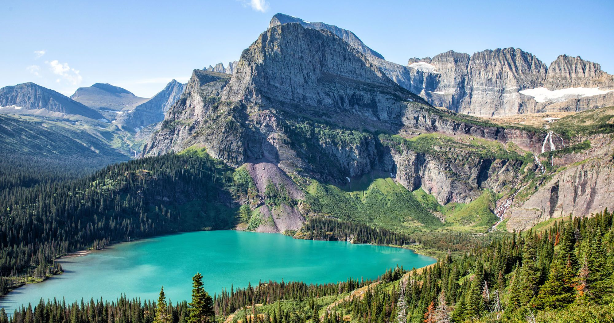

Glacier National Park is an American national park located in northwestern Montana, on the Canada–United States border, adjacent to the Canadian provinces of Alberta and British Columbia. The park encompasses over 1 million acres (4,000 km2) and includes parts of two mountain ranges (sub-ranges of the Rocky Mountains), over 130 named lake
History & Nature
According to archeological evidence, Native Americans first arrived in the Glacier area some 10,000 years ago. The earliest occupants with lineage to current tribes were the Flathead (Salish) and Kootenai, Shoshone, and Cheyenne. The Blackfeet lived on the eastern slopes of what later became the park, as well as the Great Plains immediately to the east. The park region provided the Blackfeet shelter from the harsh winter winds of the plains, allowing them to supplement their traditional bison hunts with other game meat.
Things To Do
Glacier National Park is known for its many hiking trails, ranging from the easy Trail of the Cedars to the strenuous Grinnell Glacier. Along any path you traverse, you'll likely see stunning alpine scenery punctuated by jagged peaks, alpine meadows and glacial lakes. Speaking of lakes, Glacier National Park boasts more than 700 of them. See a few (including Lake McDonald) on a guided Glacier Park Boat Company tour.
Hotels, Lodging & Camping
U.S. News & World Report ranks the best hotels in Glacier National Park based on an analysis of industry awards, hotel star ratings and user ratings. Hotels that scored in the top 10 percent of the Best Hotels in the USA earned a Gold badge. Hotels that appear after ranked hotels are sorted by hotel class and then by user rating, as provided by TripAdvisor.
Hours & Pricing
All areas of the Glacier national park are only accessible via guided tour.
Location
|  | |
|